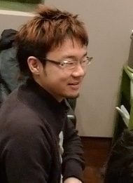

瀬上：それにしても、ソニックタイトルは、リリースされる前から、皆さんから音楽面で気にしてもらえますね。
幡谷：それは裏切ってはいけないところで、セガのサウンドの特徴だよね。エレガンスというか。
床井：何ですか、その5文字は（笑）。
幡谷：本格派というか、豪華さというか。個人的な印象だけどさ。他の風を入れるというコラボレートも積極的に行ないつつ、ゲームという本質も大切にしつつ、他のタイトルとは違うアウトプットを生み出す、そういうタイトル。こういうサウンドトラックのジャケットの内容とかも然りで、気が利いているというか、どれも完成度高いよね。
瀬上：あー、それを言ったら、「トゥルー・ブルー」で一つ後悔していることが。ほら、コンピレーションって、シンプルに必要な情報だけ入っていて、こざっぱりまとまっているものが多いじゃないですか。今回、「The Works」と「The Best of Crush 40」と、自分でまとめたものをリリースするのにあたってコメンタリーを入れたんだけど、やっぱりこういうのはあるべきだな、と思って「トゥルー・カラーズ」にも入れたんですよ。「トゥルー・ブルー」に関しては、裏話じゃないけど、楽曲コメントを載せなかったのは、今となっては心残りだな。
幡谷：「トゥルー・ブルー」も集大成だったよね、曲順もいいし。でもさ、一つ言うならば、お腹イッパイなんだよね、これ。
大谷：濃いからなぁ！
幡谷：そうそう、で、澤田くんの“Sonic Speed Riders”で安心するんだよ。その爽快な感じに。
瀬上：このアルバムって、裏ジャケにあるような段組みで、それぞれ一括りという感じに分けているんですよね。
幡谷：何だかさ、フルコースで違うジャンルのメインディッシュばかり食べているみたいで、聴く方も力が入っちゃうんだよね。
瀬上：それに比べたら、「トゥルー・カラーズ」の方が軽いかもね。
幡谷：ソニックへの思いに重みがあるんだよね、きっと。色々な人の人生が入ってるアルバムだから。
瀬上：重いなぁ、いきなり。
幡谷：「トゥルー・カラーズ」も曲順が良かったね。
瀬上：なかなか苦労しますよね、こういうコンピレーションの曲順は。
幡谷：あとは、何といってもこの盤面が好きなんだよね、それとトレイの下の感じとか。
瀬上：やっぱり象徴的ですもんね。
幡谷：あと、この青の感じね！あと、そういえば、このビッグのテーマ好きなんだよね。
瀬上：今回のは、デモを引っぱりだしてきて、それに最終版のヴォーカルを載せたものなんですよ。
幡谷：それって、どういう理由で？
瀬上：『ソニックヒーローズ』のヴォーカルアルバム（トリプル・スレット）にオリジナルバージョンが入ってるから。まぁ、エミーのテーマ曲も入ってるんだけど。
幡谷：これ、一度ライブでやったよね。
瀬上：うんうん、懐かしいね。この曲の最終バージョンは、床井くんたちがニューヨークでレコーディングに立ち会ってきた際に、演奏部分も、全てお任せで差し替えているので、僕の曲の中ではデモと最終形の差がある方なんです。僕の場合は、自分で弾くこともあって、割と最終形と変わらないデモが多いんで。
幡谷：楽しい曲だよね。ビッグと言えばさ、床井くんが手掛けたゲーム中の曲も好きなんだけど、あれ、釣りのときの曲なんでしょ？
床井：そうですね、釣りで魚が掛かったときの曲ですね。
幡谷：釣りだけなんて勿体ない！テレビでも使えそう、バラエティ番組で！
床井：えー、意外！
瀬上：ツカミばっちりな曲だもんね。
床井：あの曲、実は幡谷さんの曲からインスパイアされたものですよ。セガラリーとか、その手の幡谷さんの曲の手法を取り入れたんですよ。
幡谷：確かに、セガラリーの曲は、次から次へとコーナーが何度も続く感じで、その緊張感を曲で表現しようとした経緯はあるな。
瀬上：どっちの曲もキメばっかりだし！
幡谷：大谷の曲で印象的なのは、このCDに入っているわけじゃないけど、やっぱり『ソニック ワールドアドベンチャー』のテーマ曲の”Endless Possiblity”かな。あの出だしのギターのフレーズが左から始まるのがいいんだよ！チャララチャララっていうフレーズがいきなり左から始まって、「お、スピーカー壊れたか？」みたいな、そういうサプライズ、思い切りの良さがソニックを象徴してる気がする。
大谷：これまたチェックポイントが妙ですね。左から始まる方が印象的だったので。
瀬上：えー、それを言ったら『ソニックアドベンチャー』のソニックのテーマ曲の"It Doesn't Matter"のギターも左から始まってるよ！
床井：おれも何かあったかなー、左から始まるものって。

一同：笑
大谷：あの曲で言えば、生のドラムと打ち込みの速いテンポのリズムを融合したのは、人力を超えた感じというか、人には表現出来ないスピード感みたいなのを出したかったんですよね。ソニックのスピードが尋常じゃない感じを打ち込みのリズムを足すことで表現しようかなと。
瀬上：うーん、じゃあもう駄目だ、もう人を使っちゃいけないんだ。
一同：笑
大谷：でも、人の感じ、生き物の感じも欲しいし。
瀬上：じゃあ、別の生き物に頼むか、次は。
一同：笑